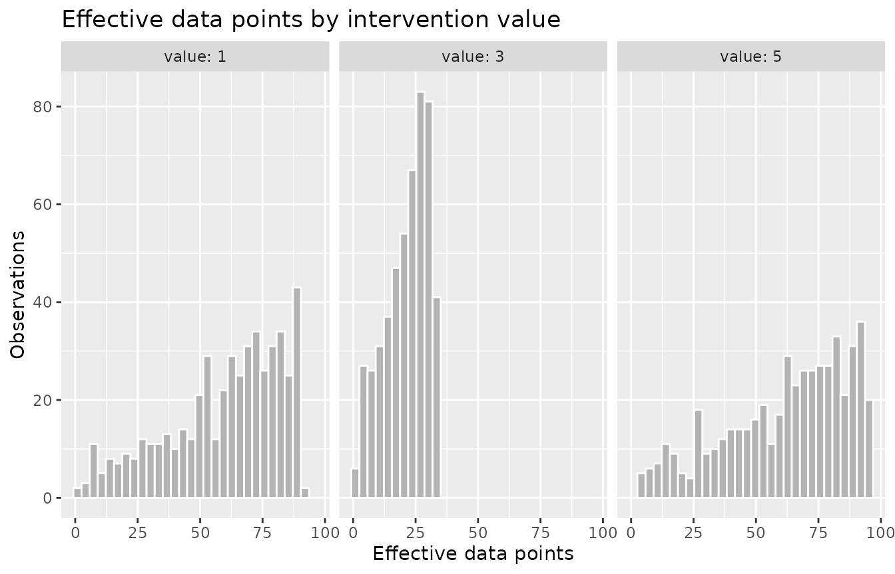
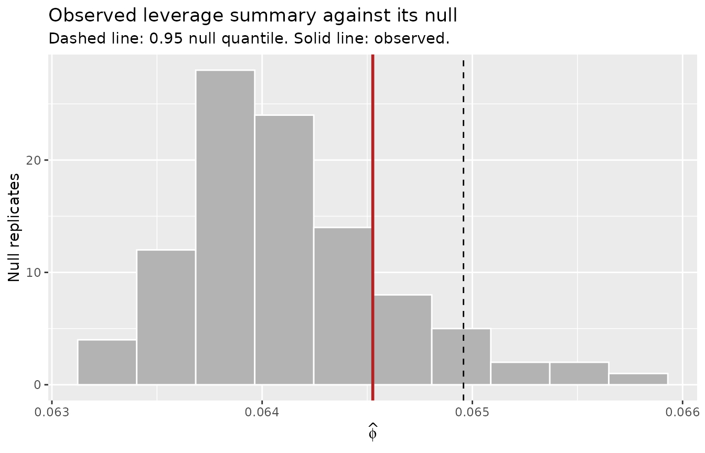
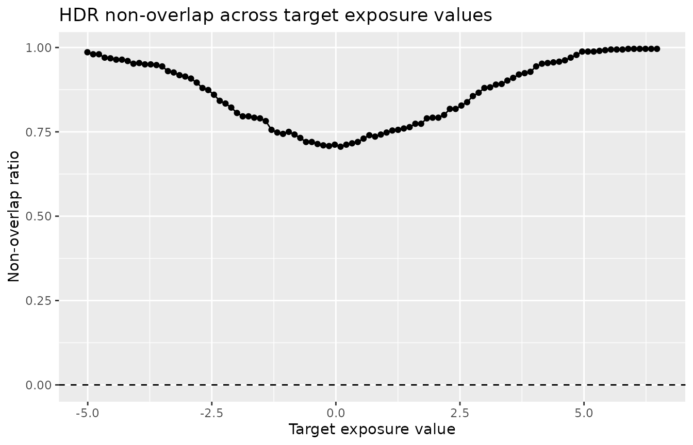

Positivity for continuous exposures
Source:vignettes/continuous-exposures.Rmd
continuous-exposures.RmdFor a binary exposure, a positivity problem has a familiar shape: the fitted propensity approaches zero or one, and there are two tails to inspect. A continuous exposure has no single propensity to threshold. Positivity becomes a question about support: for each candidate dose and each stratum of the covariates, is there observed data near that dose? A violation is a region of the joint exposure-covariate space that holds little or no data, and that region does not reduce to two tails. It can sit in the middle of the exposure range, it can depend on the covariates, and it can be invisible in the marginal distribution of the exposure. The three continuous-exposure diagnostics in positively measure support in three different ways, and each is informative about a different geometry of violation.
Setup
positively includes pos_violations_long, a simulated
wide-format longitudinal dataset with one row per subject over three
time points. Each exposure column is continuous, taking hundreds of
distinct values.
pos_violations_long
#> # A tibble: 500 × 7
#> id l0 a1 l1 a2 l2 a3
#> <int> <dbl> <dbl> <dbl> <dbl> <dbl> <dbl>
#> 1 1 0.621 -0.672 0.202 5.32 7.49 6.77
#> 2 2 0.0356 2.00 -0.0732 5.71 4.79 7.89
#> 3 3 0.773 1.30 0.688 4.35 4.19 2.96
#> 4 4 1.27 2.23 0.808 5.40 4.06 4.64
#> 5 5 0.371 1.75 1.01 1.31 1.33 1.36
#> 6 6 -0.163 -0.920 -1.64 1.78 0.507 -0.197
#> 7 7 0.397 -0.936 -1.73 5.74 6.09 8.04
#> 8 8 -0.0800 -1.14 -0.804 5.25 5.56 5.70
#> 9 9 -0.345 -0.976 -1.03 5.77 5.43 2.37
#> 10 10 0.702 0.532 0.287 4.55 6.15 6.43
#> # ℹ 490 more rowsThe planted violation is documented in
?pos_violations_long and lives in the time-2 exposure
a2. That exposure is drawn on [0, 2] or
[4, 6], so it never falls in the open interval
(2, 4). The time-1 and time-3 exposures place values
throughout that interval, so the gap is specific to a2
rather than a feature of the exposure process as a whole.
range(pos_violations_long$a2)
#> [1] 0.006241528 5.997213255
any(pos_violations_long$a2 > 2 & pos_violations_long$a2 < 4)
#> [1] FALSEThe sections below run each diagnostic on a2 with the
covariates l0 and l1. The gap is a mid-support
hole in the marginal distribution of a2, so it is a useful
case for showing which diagnostic detects which kind of violation.
Effective data points: support at chosen exposure values
check_edp() computes the effective-data-points
diagnostic of Ring and Schomaker (2026). For each observation moved to a
candidate intervention value, it sums a product kernel over the sample
to measure how much observed data surrounds that intervened-on point.
The result runs from zero, meaning no observed support, up to the sample
size.
For a continuous exposure the default candidate values are the deciles of the observed exposure, which follow the observed mass and here all fall outside the gap. To probe the suspected hole, supply candidate values that span the range, including one inside the gap.
edp <- check_edp(pos_violations_long, a2, c(l0, l1), values = c(1, 3, 5))
#> ℹ Treating `.exposure` as continuous
edp
#>
#> ── Effective data points ───────────────────────────────────────────────────────
#> Exposure: "a2" (continuous)
#> Observations: 500
#> Variant: data
#> Intervention values: 3
#> edp range: 0.896 to 95.254The message reports that the exposure was detected as continuous.
Detection runs once per call, but only a diagnostic that supports more
than one exposure type announces what it settled on:
check_edp() computes a different quantity for each type it
accepts, so which one it read is worth saying. A diagnostic that
supports a single type has nothing to report, so
check_hat_values() and check_hdr() below stay
silent, as does any call that declares the type. Detection is a default
and not an override: the section on declaring the exposure type shows
how to set the type yourself when the heuristic reads a continuous
exposure as something else.
Effective data points are a relative measure, meaningful when
compared across candidate values for a fixed covariate set rather than
against a universal threshold. The candidate value 3 sits
in the gap. Summarizing by candidate value shows its effective data
points are far below those at the supported values 1 and
5.
tidy(edp) |>
group_by(value) |>
summarize(edp = round(mean(edp), 1))
#> # A tibble: 3 × 2
#> value edp
#> <dbl> <dbl>
#> 1 1 59.6
#> 2 3 21.4
#> 3 5 62.2The autoplot() histogram, faceted by candidate value,
shows the same result as a distribution. The mass for the gap value
3 is concentrated at low effective data points, while the
supported values carry a broad distribution of well supported
observations.
autoplot(edp, type = "histogram")
Effective data points detect the a2 gap directly,
because the kernel measures local support in the joint
exposure-covariate space without assuming a form for the conditional
density.
Hat values: leverage-based extrapolation risk
check_hat_values() computes the hat-value diagnostic of
Moodie and Schulz (2025). It fits the linear design matrix formed from
the exposure and the covariates, then for each exposure percentile and
each observed covariate row it measures the leverage that the resulting
candidate point would exert on the model. A candidate is flagged as high
leverage when its hat value exceeds threshold * p / n. The
summary statistic is the proportion of high-leverage candidates,
calibrated against a null in which the exposure is drawn independently
of the covariates.
The null distribution is drawn by resampling, so we set a seed in the
chunk. We use null_reps = 100 to keep the vignette fast.
This is a toy setting; in practice keep at least the default of 500
replicates so that the null quantile is stable.
set.seed(1)
hat_values <- check_hat_values(
pos_violations_long,
a2,
c(l0, l1),
null_reps = 100
)
hat_values
#>
#> ── Hat values ──────────────────────────────────────────────────────────────────
#> Exposure: "a2" (continuous)
#> Observations: 500
#> Null: permutation (100 reps), cutoff 2p/n
#> phi-hat: 0.065
#> Null 0.95 quantile: 0.065
#> Exceeds null: FALSE
#> High-leverage candidates: 613 of 9500The observed summary statistic does not exceed the null quantile, so
the leverage profile is not distinguishable from one in which the
exposure and covariates are independent. Two properties of the
diagnostic explain the result. First, the candidate exposure values are
percentiles of the observed exposure, which fall on the two supported
modes and never enter the gap. Second, a2 does not depend
strongly on l0 or l1, so no exposure-covariate
combination is far from the observed design in the leverage sense.
autoplot(hat_values, type = "null")
Hat values identify extrapolation risk that arises when specific
exposure values combine with covariate values in a way that is far from
the observed design. That risk is present when the exposure is
covariate-driven, and it is evaluated at plausible exposure percentiles
rather than at holes in the exposure’s own support. The a2
gap is a marginal mid-support hole, so it falls outside what hat values
measure.
Highest density region non-overlap
check_hdr() computes the highest-density-region
non-overlap ratio of Bao and Schomaker (2025). For a common target
exposure value, it reports the fraction of covariate profiles whose
highest-density region excludes that value, that is, the share of the
population for which the target dose is not supported. The ratio is zero
when the target is supported everywhere and one when it is supported
nowhere.
hdr <- check_hdr(pos_violations_long, a2, c(l0, l1))
hdr
#>
#> ── HDR non-overlap ─────────────────────────────────────────────────────────────
#> Exposure: "a2" (continuous)
#> Observations: 500
#> HDR mass: 0.95
#> Density estimator: normal
#> Non-overlap over 100 targets: 0 to 0The non-overlap ratio is zero at every target, including targets
inside the gap. The default estimator,
hdr_density_normal(), fits lm(a2 ~ l0 + l1)
and treats the conditional density as Gaussian around the fitted mean.
The a2 gap is a hole between two modes of the conditional
density, and the fitted normal fills that hole and reports the target as
supported. As documented in ?check_hdr, the default
estimator detects mean-shift support gaps, where a stratum’s supported
dose moves away from a target, and does not detect multimodal gaps. A
flexible conditional-density estimator supplied through
new_hdr_density() is needed to detect a multimodal
hole.
To show the ratio when it is informative, consider a mean-shift example in which the exposure depends strongly on a covariate.
set.seed(2)
n <- 500
l <- rnorm(n)
dose <- rnorm(n, mean = 2 * l, sd = 0.4)
shift <- data.frame(dose = dose, l = l)
hdr_shift <- check_hdr(shift, dose, l)
hdr_shift
#>
#> ── HDR non-overlap ─────────────────────────────────────────────────────────────
#> Exposure: "dose" (continuous)
#> Observations: 500
#> HDR mass: 0.95
#> Density estimator: normal
#> Non-overlap over 100 targets: 0.706 to 0.996Here each covariate stratum supports a narrow band of doses around
its own mean, so no single common dose is supported across the whole
population. The non-overlap ratio has a nonzero floor even at the
central target, and it rises toward one for extreme targets. The
autoplot() curve shows the ratio against the target
value.
autoplot(hdr_shift)
The non-overlap ratio measures support for a common target dose across covariate strata. It is a population-level quantity: a nonzero floor means that setting the whole population to one dose is infeasible, not that the density model fits poorly.
When each diagnostic is informative
The three diagnostics measure support in different ways, so they detect different geometries of violation.
- Effective data points measure local support in the joint
exposure-covariate space at candidate exposure values you choose. They
detect sparse support at those values, including a mid-support hole in
the exposure’s own distribution, as with the
a2gap. - Hat values measure leverage-based extrapolation risk for exposure percentiles combined with observed covariate rows. They are informative when the exposure is covariate-driven and extreme dose-covariate combinations sit far from the observed design. They do not target holes in the exposure’s marginal support.
- Highest density region non-overlap measures whether a common target dose falls within the highest-density region of each covariate stratum. With the default normal estimator it detects mean-shift gaps, where a stratum’s supported dose moves away from the target, and requires a flexible density estimator to detect multimodal holes.
Running all three and reading them together shows both the location of a violation and the kind of support it lacks.
Declaring the exposure type
Every diagnostic infers the exposure type from the data unless you
declare it. Exactly two distinct values is read as binary; otherwise a
numeric exposure is read as categorical when fewer than 20 percent of
its values are distinct, which is a sensible default and the wrong
answer for a coarsely measured dose. Consider a drug dose recorded at
eight milligram levels across 150 subjects, with higher doses given to
subjects with higher l.
set.seed(3)
n <- 150
l <- rnorm(n)
dose <- round(pmin(pmax(35 + 15 * l + rnorm(n, sd = 5), 0), 70) / 10) * 10
coarse <- data.frame(dose = dose, l = l)
sort(unique(coarse$dose))
#> [1] 0 10 20 30 40 50 60 70The dose is continuous in every sense that matters to these diagnostics, but eight distinct values over 150 observations fall well under the cutoff, so it is detected as categorical.
check_edp(coarse, dose, l, values = c(10, 40, 70))
#> ℹ Treating `.exposure` as categorical
#>
#> ── Effective data points ───────────────────────────────────────────────────────
#> Exposure: "dose" (categorical)
#> Observations: 150
#> Variant: data
#> Intervention values: 3
#> edp range: 0 to 38.891check_edp() accepts a categorical exposure, so it runs
regardless, treating each dose level as a category.
check_hat_values() and check_hdr() do not
accept one, so under detection alone neither would run here at all.
Setting exposure_type settles the question. A declared type
is authoritative: detection is not consulted at all, and the declaration
is refused only when its math cannot run on the column as given, which
for "continuous" means a column that is not numeric and for
"binary" a column without exactly two distinct values.
check_hdr(coarse, dose, l, values = c(10, 40, 70), exposure_type = "continuous")
#>
#> ── HDR non-overlap ─────────────────────────────────────────────────────────────
#> Exposure: "dose" (continuous)
#> Observations: 150
#> HDR mass: 0.95
#> Density estimator: normal
#> Non-overlap over 3 targets: 0.42 to 0.967The non-overlap ratio is lowest at 40, near the center
of the observed doses, and highest at the two extremes, which few
covariate profiles support.
check_positivity() takes the same argument and forwards
the resolved type to every diagnostic it composes, so one declaration
covers the whole set.
set.seed(4)
check_positivity(coarse, dose, l, exposure_type = "continuous")
#>
#> ── Positivity check ────────────────────────────────────────────────────────────
#> Exposure: "dose" (continuous); 150 observations; covariate l
#>
#> ── port ────────────────────────────────────────────────────────────────────────
#> 20 subgroups reported, 6 with low support
#> Rule: prevalence outside [0.05, 0.95] among subgroups of at least 5% of the
#> sample
#>
#> ── hat_values ──────────────────────────────────────────────────────────────────
#> phi-hat 0.51 exceeds the 0.95 permutation-null quantile of 0.044
#> 1453 of 2850 unit-value pairs above the 2p/n cutoff (500 reps)
#>
#> ── edp ─────────────────────────────────────────────────────────────────────────
#> Data variant over 5 intervention values; edp 0.109 to 49.94
#>
#> ── hdr ─────────────────────────────────────────────────────────────────────────
#> 95% HDR, normal density; non-overlap 0.413 to 0.967 over 100 targets
#>
#> ℹ `sniff_violations()` for what was found, `$port` to extract a diagnostic,
#> `summary()` for every statistic.Each diagnostic offers only the types it supports, so
"binary" is not among check_hdr()’s choices
and declaring it there fails on the argument rather than on the column.
check_positivity() takes all three types, so it is where
the structural rule does the refusing: eight distinct doses are not
two.
check_positivity(coarse, dose, l, exposure_type = "binary")
#> Error in `check_positivity()`:
#> ! `check_positivity()` needs exactly two distinct values in `.exposure`
#> for a binary exposure.
#> ✖ `.exposure` has 8 distinct values.Time-varying exposures
check_hdr_seq() applies the non-overlap ratio to a
time-varying continuous exposure, one time point at a time, fitting the
conditional density of each exposure on the history that enters its
conditioning set. It accepts the same wide-format data used above, with
an ordered selection of exposure columns and a per-time-point list of
covariates. The Identifying violations: PoRT and sPoRT vignette
covers the sequential diagnostics in full, including conditioning-set
construction and the longitudinal support structure of
pos_violations_long.
Where to go next
The Getting started with positively vignette introduces
check_positivity() and reads each diagnostic’s output and
plot on a binary example. For a continuous exposure,
check_positivity() runs effective data points, positivity
regression trees with the exposure categorized, hat values, and highest
density region non-overlap together, with the defaults used above.
References
Bao Y, Schomaker M (2025). Feasible Dose-Response Curves for Continuous Treatments Under Positivity Violations.
Moodie EEM, Schulz J (2025). A Simple Diagnostic for the Positivity Assumption for Continuous Exposures. Statistics in Medicine, 44:e70194.
Ring C, Schomaker M (2026). A Diagnostic to Find and Help Combat Stochastic Positivity Issues, with a Focus on Continuous Treatments.